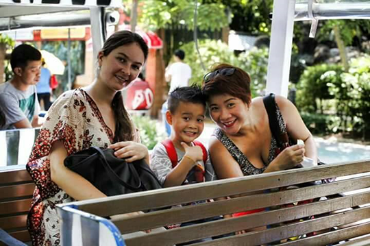
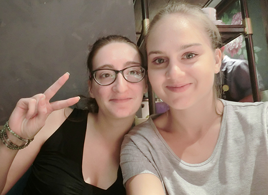

什么是Aupair（互惠生）
互惠生Aupair 源自于法文“互助、互惠”的意思。该项目于1900年起源于欧洲，已有上百年历史。美国国务院于1986年立法后成为美国官方项目。特指青年人到国外学习他国语言和文化并以家庭成员身份住在外国家庭，由接待家庭提供免费的食宿和零用钱、国际往返机票、语言学习补贴和保险等待遇。外国青年则主要承担陪伴孩子和分担家务的工作，并同时让该家庭的孩子及家长都可以学习别国的语言、感受异国文化，达到双方互惠互助的目的。

外国青年学生入住中国家庭，在体验中国文化的同时帮助中国家庭提高外语交流能力、感受西方教育理念、开辟新型的高端生活方式。 这是为孩子营造一个外语母语的学习环境及全家人零距离领略西方文化色彩的最佳途径。外国青年学生在互惠家庭中需要承担约定好的责任和义务，并以家庭的时间安排为准，遵守家庭秩序。其核心特点是家庭成员身份。
外国青年学生通过这一项目，可以得到亲身体验中式生活、感受中国文化、学习中文的机会，因此他们具备主动积极地陪伴孩子和家庭人的特点，他们与家庭之间的关系并非家庭的客人，或者雇主与雇佣者的关系，这也是与寄宿家庭Home Stay或菲佣及洋外教的重要区别。 “互惠生”与寄宿学生或Homestay方式有一个本质区别，就是一定要付出一些责任才能得到回报。在寄宿家庭中，双方本身没有责任和义务，你去寄宿，是以房客的形式给家庭一些费用就可以了，“互惠生”是必须要对家庭尽到一定的责任。
外国互惠生可以帮助家庭接送小孩上下学、照顾小孩、陪小孩玩耍、辅导小孩英文、做简单家务等。在时间安排上，互惠生首先要以满足家庭的需要为第一位，Home Stay、交换生住家等项目则是外国人本身留学或旅游的需要为第一位，家庭处于被动等待地位。
来华互惠项目在中国开始于2010年，陆续被中国家庭所认同。目前来华互惠生项目还在初级发展阶段，旨在为中国家庭的小朋友创造英语为母语的环境，打破传统语言学习模式，改善全景式外语环境。让更多的小朋友从小体验国外文化，了解世界，认知世界。
西方大学实行完全学分制,每个学生只要修满128个学分即可大学毕业，所以经常可以看到很多学生每个暑假都抓紧时间上暑期学校努力修学分以争取早一年毕业。也有的学生想给自己更多的时间，在大学的某一年可能会休学一年，他们称作“gap year(间隔年)”，一般他们会在间隔年去别国做互惠生，了解他国文化和语言，让自己开阔眼界。
